सिखों की खेल उत्कृष्टता
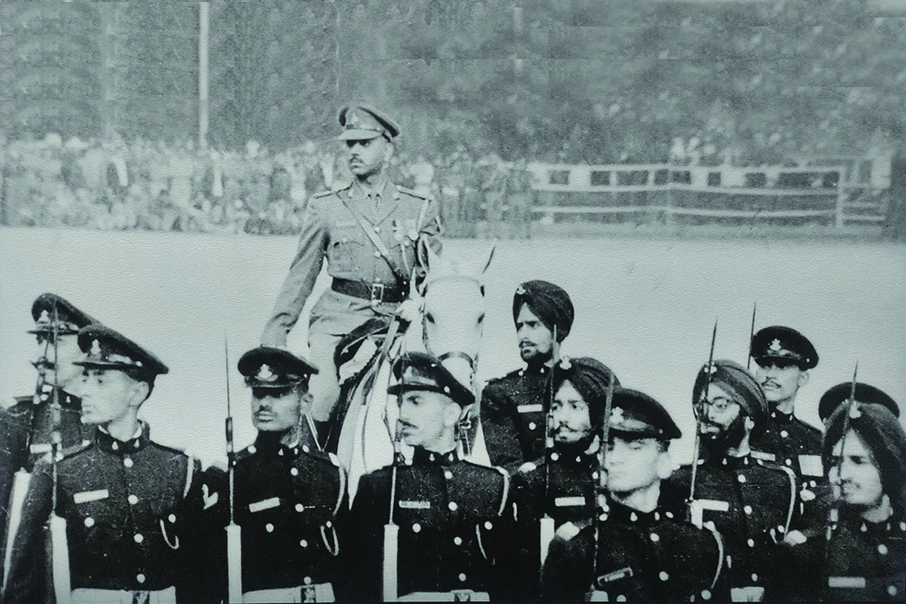
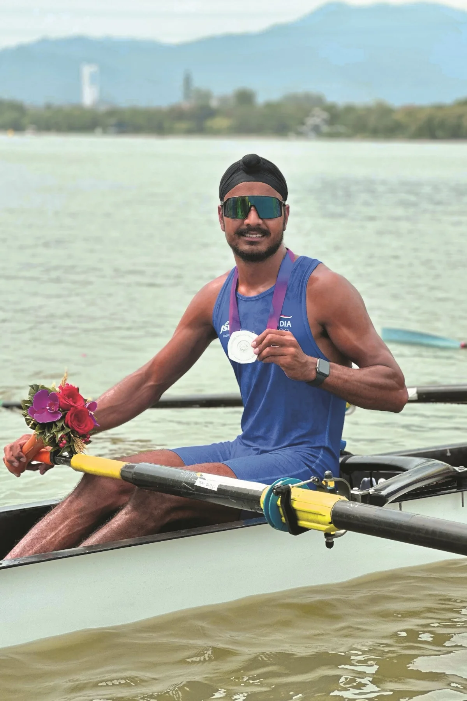
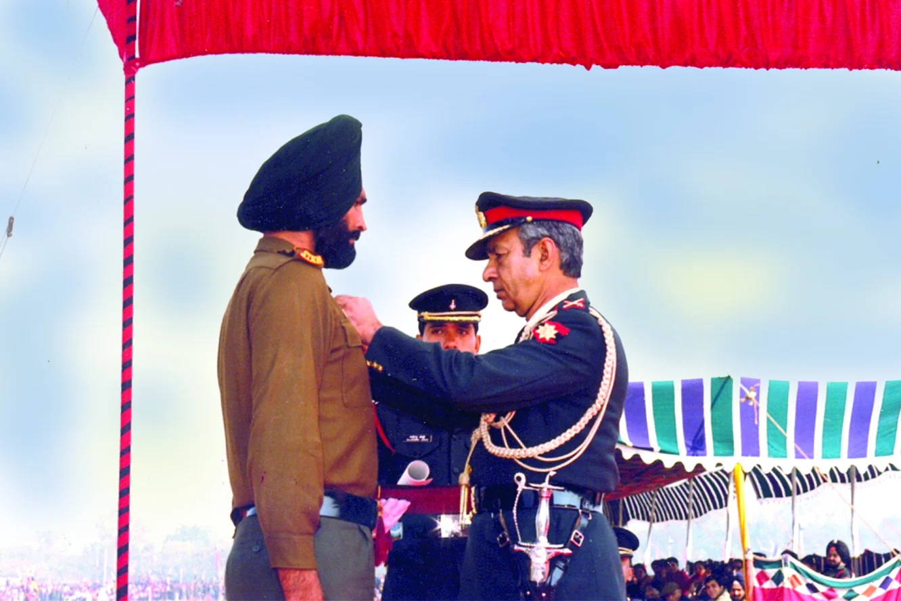
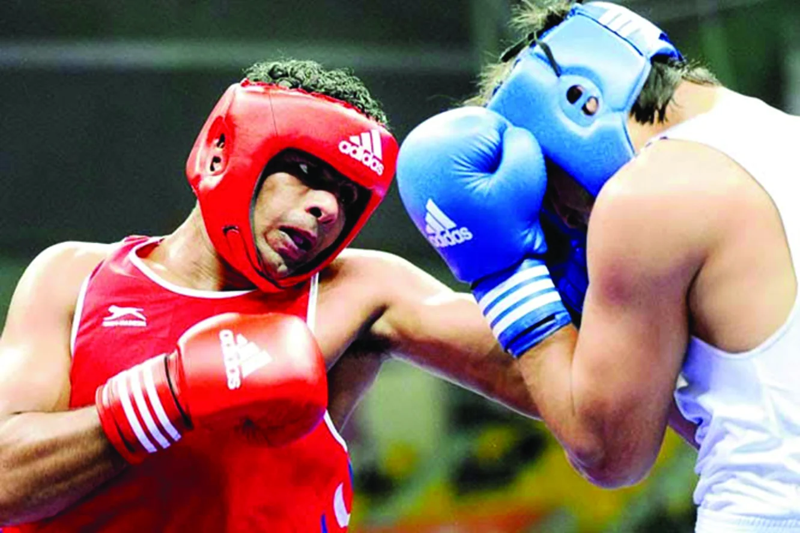
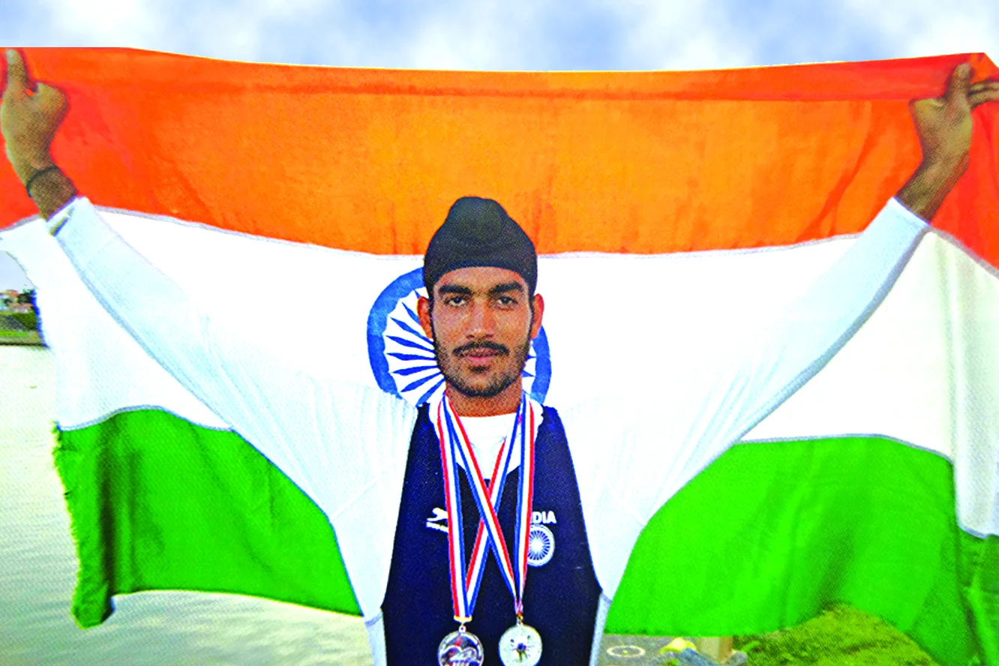
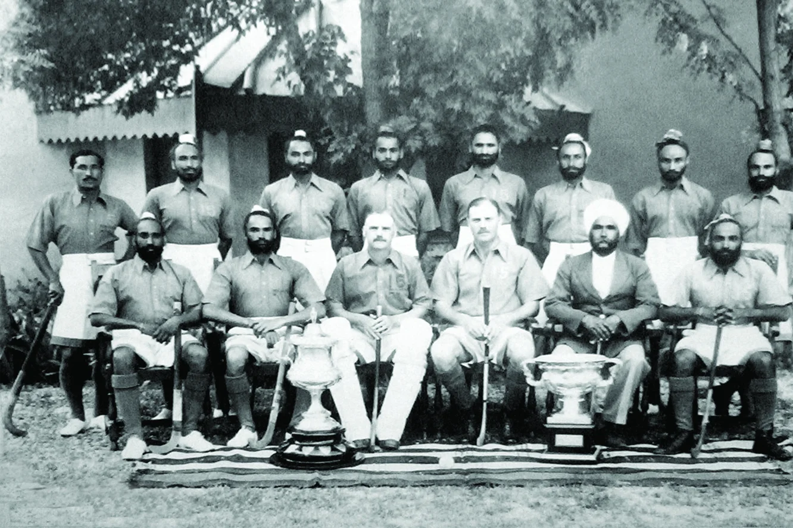
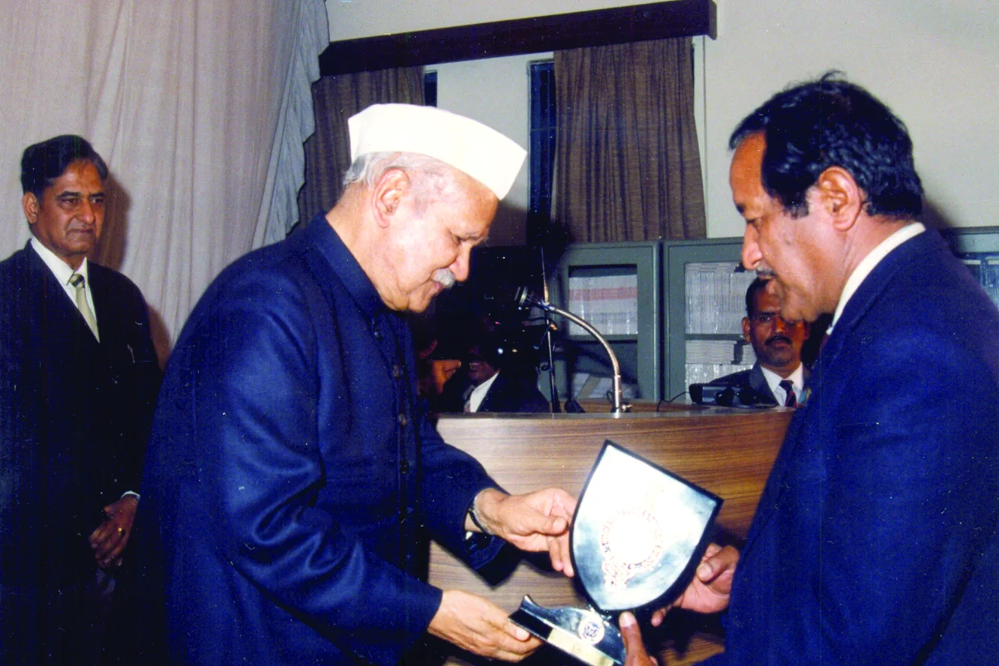
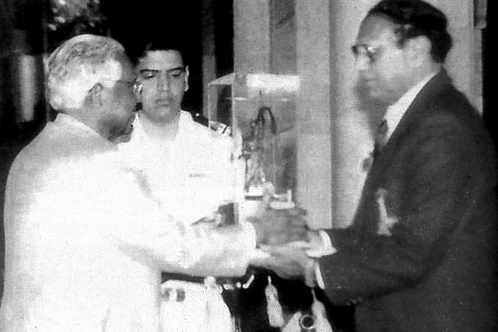
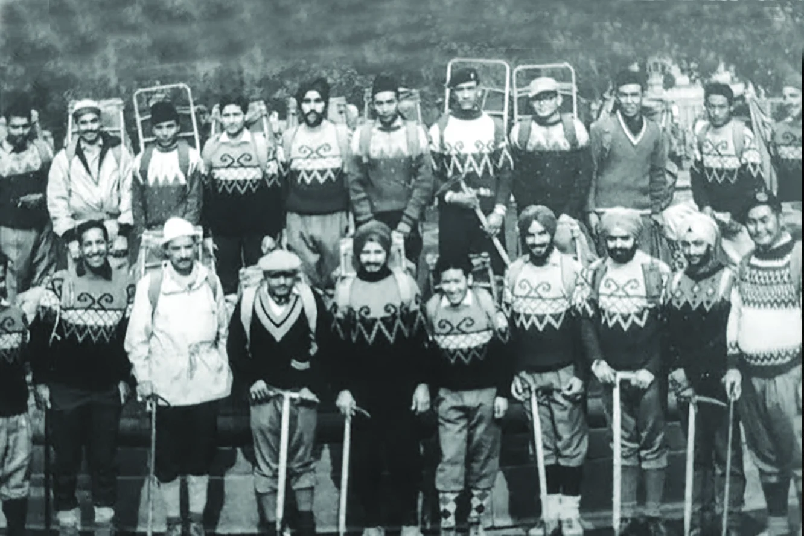
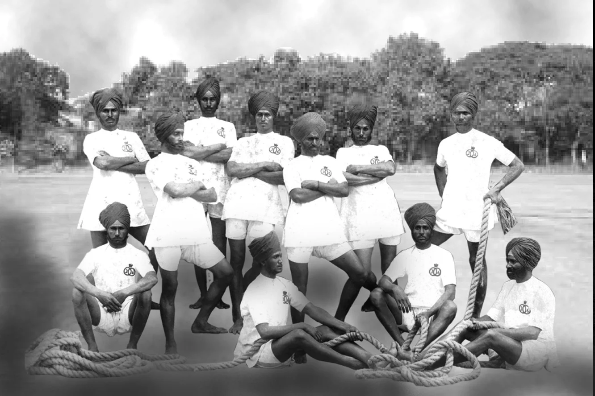
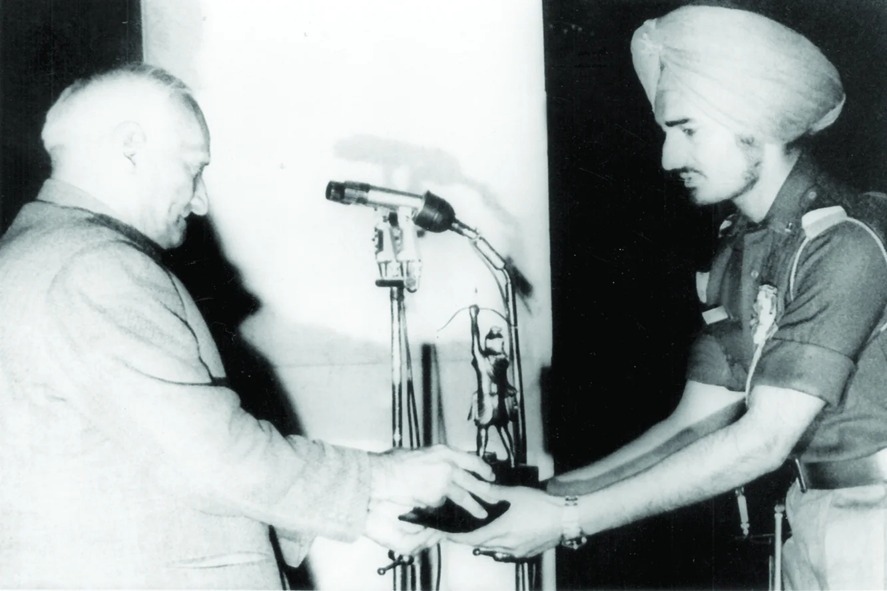
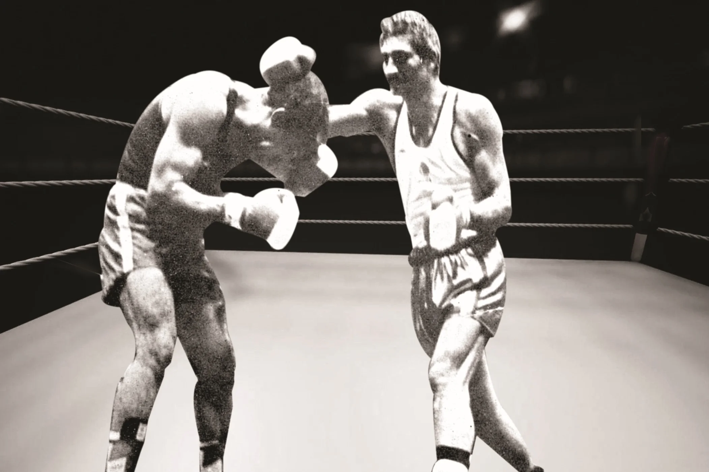
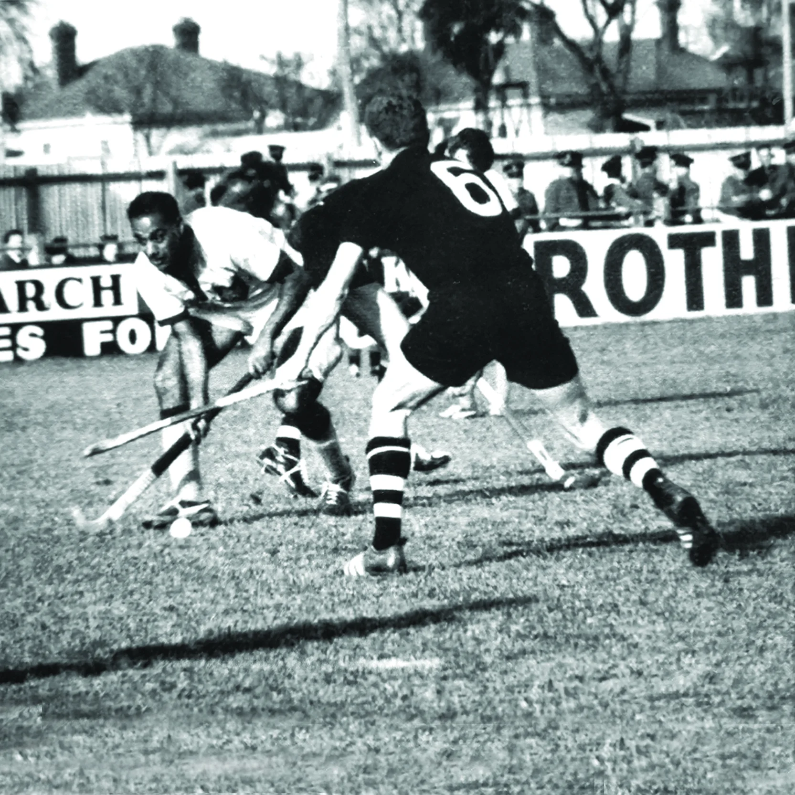
श्रेणी: जंगी मैदान से परे
कलाकार: सिख रेजिमेंटल सेंटर
वर्ष: ऐतिहासिक
सिख रेजिमेंट ने न केवल युद्ध के मैदान के लिए बहादुर सैनिकों को तैयार किया है, बल्कि प्रतिष्ठित खिलाड़ियों को भी तैयार किया है, जिन्होंने विभिन्न खेलों में खेल के मैदानों पर विजय प्राप्त की है। रेजिमेंट को खेल प्रतिभाओं को खोजने, तैयार करने और प्रशिक्षित करने के लिए बहुत मेहनत करनी पड़ी। इसी से 'उत्कृष्टता की भावना' का उदय हुआ उत्कृष्ट खिलाड़ी जिन्होंने रेजिमेंट, सेना और राष्ट्र को गौरवान्वित किया।
इसका एक शानदार आधुनिक उदाहरण महान लेफ्टिनेंट कर्नल हरिपाल कौशिक, वीआरसी हैं, जिन्हें 1962 के भारत-चीन युद्ध में उनके अनुकरणीय नेतृत्व और बहादुरी के लिए वीर चक्र से सम्मानित किया गया था, और बाद में खेल के प्रति उनके असाधारण योगदान के लिए अर्जुन पुरस्कार से सम्मानित किया गया था। हॉकी के, जिसमें दो ओलंपिक स्वर्ण पदक शामिल थे।
खालसों के लिए खेल उतना ही पुराना है जितना कि धर्म, दूसरे गुरु, गुरु अंगद देव जी तरनतारन में अच्छे स्वास्थ्य को बढ़ावा देने के लिए कुश्ती मैच आयोजित करना। गुरु गोबिंद सिंह ने 'खिदो कुंडी' बजाया, एक बच्चे के रूप में फील्ड हॉकी का एक प्राचीन प्रकार, और तीरंदाजी, तलवारबाजी और घुड़सवारी में उत्कृष्ट प्रदर्शन किया।
ब्रिटिश भारतीय सेना में रस्साकशी बहुत लोकप्रिय थी। फरवरी 1919 में, XLVII सिख एथलीटों ने काहिरा में सेंट्रल स्पोर्ट्स मीट में कई पुरस्कार जीते, और अलेक्जेंड्रिया में मिस्र अभियान बल स्पोर्ट्स चैंपियनशिप में भारतीय सैनिकों के लिए चैलेंज कप जीता। तब से रेजिमेंट ने 12 का उत्पादन किया है ओलंपियन। क्वॉइट थ्रोइंग एक और खेल था जिसमें सिखों का कोई मुकाबला नहीं था, यह 50 गज की दूरी पर एक छड़ी को दो भागों में काटने में सक्षम था।
हॉकी को पहली बार 1900 में रेजिमेंट में पेश किया गया था। 1907 में, लुडियाना सिखों ने पंजाब नेटिव आर्मी हॉकी टूर्नामेंट जीता। सिख रेजिमेंटल सेंटर हॉकी टीम की स्थापना 1948 में अंबाला में हुई थी, जिससे ब्रिगेडियर एचजेएस चिमनी और लेफ्टिनेंट कर्नल बलबीर सिंह जैसे खिलाड़ी भारत का प्रतिनिधित्व कर रहे थे। अन्य अंतरराष्ट्रीय खेल सितारों में सूबेदार जीत सिंह (कुश्ती), सूबेदार प्रकाश सिंह (एथलेटिक्स) और सूबेदार कौर सिंह (मुक्केबाजी) शामिल हैं। सूबेदार कौर सिंह, वीएसएम, एकमात्र भारतीय मुक्केबाज हैं जिन्होंने रिंग में मुहम्मद अली से मुकाबला किया है।
पर्वतारोहण में, 5 सिख के सीएचएम गुरचरण सिंह ने माउंट त्रिशूल से नीचे उतरकर विश्व रिकॉर्ड बनाया। 9 सिख के लेफ्टिनेंट कर्नल जेसी जोशी (पद्म श्री और अर्जुन पुरस्कार) मई 1965 में पहले सफल भारतीय एवरेस्ट अभियान के सदस्य थे। हाल ही में, सूबेदार मनप्रीत सिंह (मुक्केबाजी), सूबेदार रणजीत सिंह (रोइंग) ने 2010 एशियाई खेलों में पदक जीते। हवलदार नितिन (हैंडबॉल), हवलदार सुखमिंदर सिंह (शॉट पुट), हवलदार भारत भूषण (कराटे) और हवलदार जसविंदर सिंह (रोइंग) ने अंतरराष्ट्रीय क्षेत्र में इस गौरवपूर्ण खेल विरासत को जारी रखा है।

मोबाइल पर खोलें
अपने फोन पर इस कलाकृति को देखने के लिए स्कैन करें।